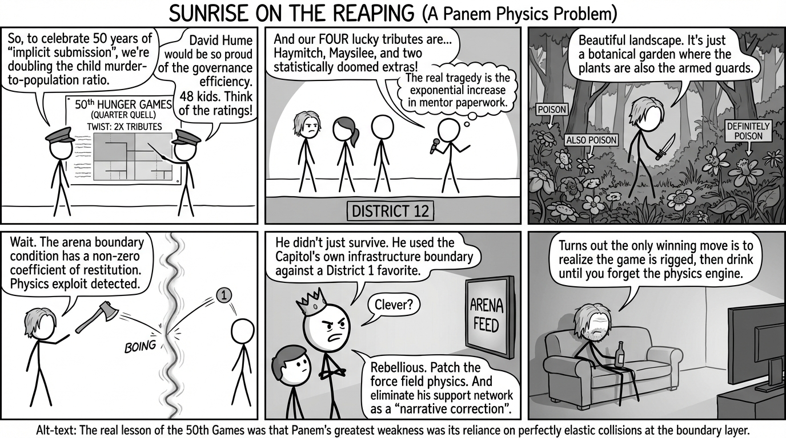

isbn-13: 9781546171478
Audible
AI Generated Content
Generated by gemini-3-pro-preview

Sunrise on the Reaping is a prequel to the original Hunger Games trilogy and a sequel to The Ballad of Songbirds and Snakes. Set for publication on March 18, 2025, the novel explores the events of the Second Quarter Quell, also known as the 50th Hunger Games. The narrative takes place twenty-four years before the story of Katniss Everdeen and forty years after the events surrounding Coriolanus Snow’s rise to power.
Plot Summary and Narrative Arc
The story is set in the dystopian nation of Panem during the lead-up to and execution of the 50th Hunger Games. As a Quarter Quell, this event is marked by a unique twist to the standard rules, dictated by the founding documents of the Games. For the Second Quarter Quell, the Capitol decrees that two male and two female tributes must be reaped from each district, doubling the total number of participants to forty-eight.
The narrative centers on Haymitch Abernathy, a youth from District 12. While specific plot beats of the novel await publication, the established canon within Catching Fire provides the historical framework for the story arc. Haymitch is selected alongside three other tributes from District 12, including Maysilee Donner. The arc follows the reaping ceremony, the preparation in the Capitol, and the lethal competition within the arena.
The arena for the 50th Games is described in established lore as a deceptively beautiful landscape teeming with poisonous flora and fauna. The central conflict involves Haymitch navigating this environment and forming temporary alliances. The climax of the arc historically hinges on Haymitch’s discovery of a force field at the edge of the arena. In the final confrontation, he utilizes the force field’s recoil mechanism to defeat his last opponent, a girl from District 1, resulting in his victory. The resolution explores the immediate aftermath of this win, specifically how the Capitol, under President Snow, perceives Haymitch’s use of the force field not as cleverness, but as an act of rebellion that exposed a flaw in the Games’ design.
Character Analysis
- Haymitch Abernathy: The protagonist is presented at a younger age, prior to the cynicism and alcoholism that define his character in the original trilogy. The narrative examines his physical capabilities, intelligence, and the psychological toll of the arena. His development focuses on the transition from a District 12 citizen to a victor, highlighting the specific trauma that leads to his eventual isolation.
- Maysilee Donner: As a fellow tribute from District 12 and the aunt of Madge Undersee (a character from the original trilogy), Maysilee serves as a significant secondary character. Her relationship with Haymitch provides emotional stakes within the arena.
- Coriolanus Snow: Now firmly established as the President of Panem, Snow serves as the overarching antagonist. His characterization connects the ambitious youth seen in The Ballad of Songbirds and Snakes with the tyrannical ruler of The Hunger Games. The book examines his methods of maintaining order and his reaction to actions he perceives as defying Capitol authority.
Key Themes and Messages
Implicit Submission and Governance
Author Suzanne Collins has stated that the thematic foundation of Sunrise on the Reaping is inspired by Scottish philosopher David Hume, specifically his ideas regarding implicit submission. The text explores “the easiness with which the many are governed by the few,” examining how the Capitol maintains control over the districts not just through physical force, but through the psychological acquiescence of the population.
The Nature of Propaganda
The novel investigates the use of media and spectacle to enforce state power. By doubling the number of dead tributes, the Second Quarter Quell serves as a heightened form of terror-as-entertainment, designed to remind the districts of their powerlessness. The narrative scrutinizes how the “truth” of the Games is manufactured and disseminated to the public.
Agency vs. Determinism
Through Haymitch’s journey, the story addresses the limits of individual agency within a totalitarian system. While Haymitch wins the Games through his own ingenuity, the subsequent punishment inflicted upon him (the canon elimination of his loved ones) reinforces the theme that in Panem, no individual is truly outside the state’s reach, and every victory comes with a mandated cost.